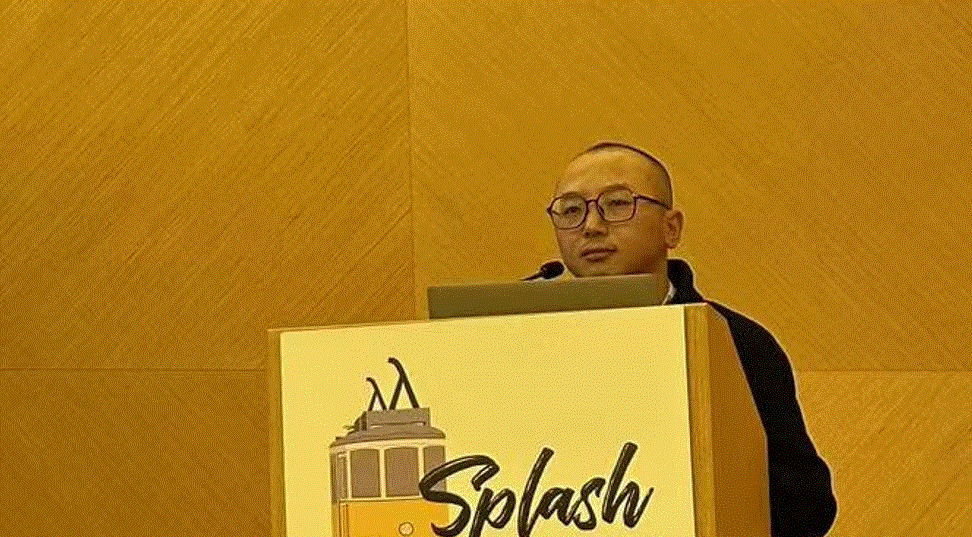

I am a final year PhD student in the CSE department of Chalmers University of Technology and University of Gothenburg, and supervised by Prof. Daniel Strüber and Prof. Regina Hebig. My research field is Model-Driven Engineering (MDE). Currently, I am mainly working on domain-specific language (DSL) related research.
I was a software engineer, mainly working with C/C++ in Windows OS and VxWorks OS. I have more than 7 years of software development experience and some large-scale industrial control projects.
I program in many other general purpose languages: C#, QT, Java, Python, etc. And I have experience in using DSLs, e.g., Xtext, ATL, QVTo, Regex, Latex, EAST-ADL, etc.
weixing [at] chalmers [dot] se
敬天爱人。——稻盛和夫（日本）
(Respect the Divine and Love People. - Kazuo Inamori(Japan))
Chalmers | University of Gothenburg (Sep 2020 – Present, Gothenburg, SE)
Oct 2018 – Dec 2019, Software Team Leader, Hangzhou, China
- Was responsible for the management of software development team, including development plan formulation, task allocation, personnel allocation, performance appraisal and daily management, etc.
- Was responsible for solving difficult technical problems/bugs.
May 2017 – Oct 2018, Project Manager, Hangzhou, China
- Was responsible for the development of all ultrasound diagnostic systems in the company, including project planning and tracking, personnel arrangement, and daily management, etc.
Dec 2016 – May 2017, Embedded Software Engineer (Middleware Layer), Hangzhou, China
- Developed platform layer software in C language. The platform layer is used to shield/connect application software and underlying hardware.
Apr 2013 – Dec 2016, Embedded Software Engineer (Application Layer), Hangzhou, China
- Developed line data analysis module for the intelligent assistance system of heavy-haul train in C++ language.
- Debugged/Upgraded/Evolved the embedded application software for the subsystem (i.e. Automatic Train Operation System, ATO) of China’s train control system (CTCS 2) in C language.
- Wrote documentations for obtaining Lloyd's Register Rail Safety Certificate (SIL2)
- Developed a prototype of the intelligent assistance system for heavy haul trains (mainly application development, debugging and configuration), in C++/Windows OS.
May 2012 – Mar 2013, Intern (Embedded Software Engineer), Hangzhou, China
- Developed functional modules of embedded application software for the subway operation control subsystem (i.e. zone controller, ZC) in C language.
BUMBLE aims at providing an innovative system and software development framework based on blended modelling notations/languages (e.g. textual and graphical). The framework provides automatic generation and management of fully-fledged blended modelling environments from arbitrary DSMLs. Blended modelling environments are expected to greatly boost the development of complex multi-domain systems by enabling seamless textual and graphical collaborative modelling.
- Role and Responsibilities: TA, supervise the lab sessions, grading.
- Content: Java Programming and Project Management.
- Role and Responsibilities: TA, supervise the lab sessions, grading.
- Content: Xtext, Domain Specific Languages (DSLs).
- Role and Responsibilities: TA, supervise the lab sessions, grading.
- Content: Software Architecture, Agile management, Literature Review.
- Role and Responsibilities: TA, hold the supervision meetings.
- Content: Python, Software evolution.
- Role and Responsibilities: Lead of TAs, grading.
- Content: UML, Software Architecture, Design Pattern.
- Role and Responsibilities: Lecturer.
- Content: Python, AI, MongoDB, Kubernetes, Cloud, etc.
- Role and Responsibilities: Lecturer.
- Content: Agile Management.